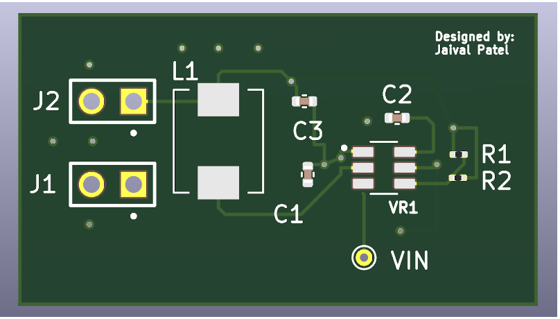
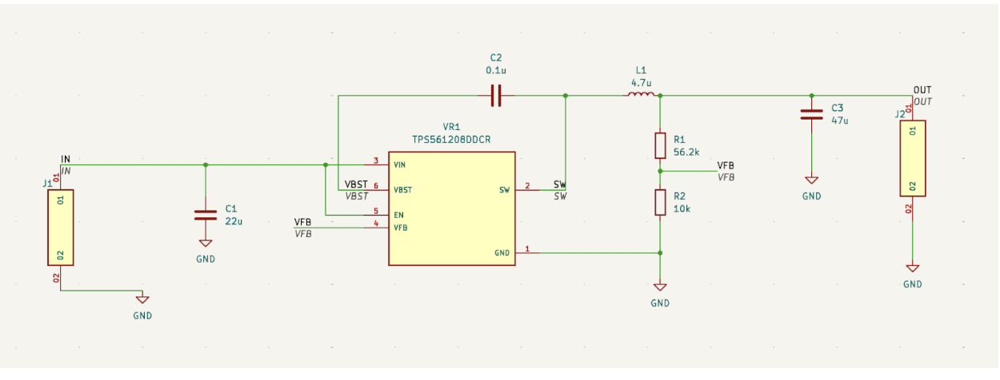
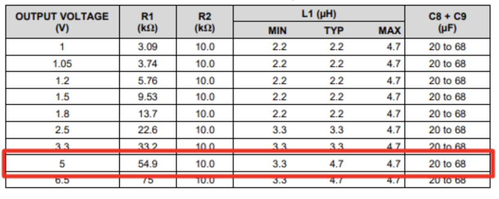
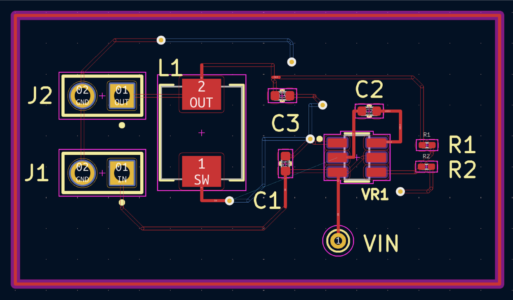

The design, layout, and testing of a simple DC-DC step-down converter breakout board using the TPS561208DDCR switching regulator. The design steps down a 7–14V input into a stable 5V output, capable of driving up to 1A loads with low ripple and high efficiency. The PCB was designed with a focus on layout cleanliness, loop minimization, and thermal behavior under burst load conditions.

Figure 1: TPS561208 Breakout Board
Role
Selected the TPS561208DDCR based on quiescent current, switching frequency, and load regulation
Performed hand calculations for output voltage, loop stability, and compensation
Designed and iterated the PCB layout in KiCad with polygon fills and current loops in mind
Validated behavior with oscilloscope probing and resistive load testing
Key Features

Figure 2: Schematic
Feedback Divider Calculation
The feedback loop is governed by the standard buck feedback equation:
VOUT = VREF * (1 + R1/R2) where VREF = 0.768V
To generate a 5V output, I chose R2 = 10kΩ and calculated R1 ≈ 55.1kΩ, selecting the nearest E24 resistor. Using a higher R2 value reduces current draw through the divider and improves light-load efficiency, while remaining low enough to prevent noise injection at the FB node.
Ceramic Input and Output Caps
Input: 22µF X7R 25V rated MLCC handles bulk capacitance and switching dips. Output: 47µF X7R chosen for transient performance without excessive ESR. Ceramic capacitors were prioritized over tantalum for their lower ESL, reduced package size, and thermal performance.
Inductor Selection
For 1A output at 5V, a 4.7µH shielded inductor was selected with 20% margin over peak current and minimal DCR. This reduced ripple and core heating under burst mode operation. Placement was tightly coupled to the switch node for minimal loop inductance.

Figure 3: Inductor Table
PCB Layout Decisions

Figure 4: PCB layout
Loop Area: The VIN-to-L-to-VOUT and GND return paths were kept short and compact to reduce EMI and voltage overshoot.
Thermal Relief: Large polygon pours on VIN, GND, and VOUT for heat sinking and low impedance return paths.
Via Stitching: Used to tie upper GND copper to bottom copper for current return and improved thermal conductivity.
Routing Strategy: Avoided routing high-speed switch node traces under analog FB or EN lines to prevent noise coupling.
Architecture & Implementation
This is a 2-layer board routed in KiCad with SMA header footprints on input and output for easy breadboard or testbench access. Key decisions included:
Maintaining shortest high-current paths by clustering input/output caps near the IC
Route FB trace away from SW node using inner-layer or shielded polygon
All passive components placed per TI-recommended layout for TPS561208
Output ripple tested with X10 probe at <1% peak-to-peak under dynamic load
Challenges & Constraints
Feedback Noise: FB trace layout initially picked up ripple from the switch node. Fixed by shielding with polygon pour and using ground guard.
Polygon Pour Interactions: Improper stitching created floating copper near SW. Fixed by tighter DRC tuning and net merging rules.
Layout Size Constraints: Achieving TI-recommended loop areas in limited breakout board real estate was non-trivial.
Compensation: Using fixed compensation limited range of acceptable output caps and ESRs; required datasheet-guided tuning.
Outcome
Board successfully stepped 9V input to 5V at 1A output
Stable under full load with low ripple and soft thermal rise
Compact form factor and header accessibility made it reusable across projects
Future Work
Add ENABLE pin breakout and soft-start capacitor option for sequencing
Use 4-layer PCB for improved EMI containment and current return plane integrity
Integrate load switch on output for controlled subsystem power gating
Build modular variant for adjustable output using 0Ω jumpers and socketed resistors
Tools Used
KiCad – schematic and 2-layer layout
Oscilloscope, DMM – testing and validation
TI Power Design Guidelines + datasheet layout analysis